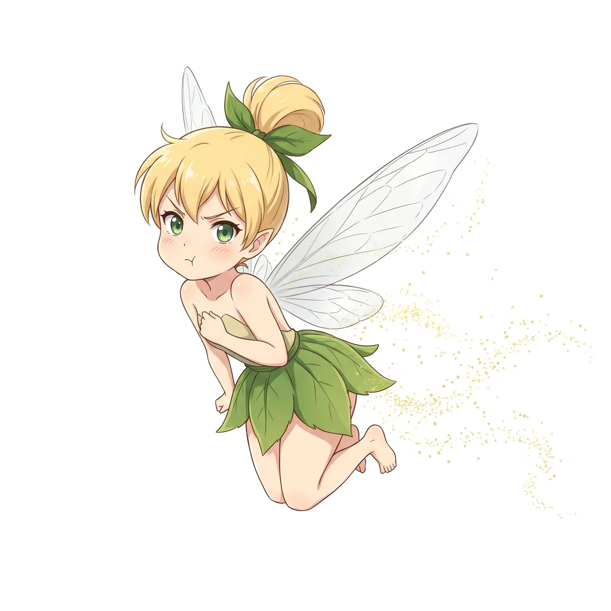
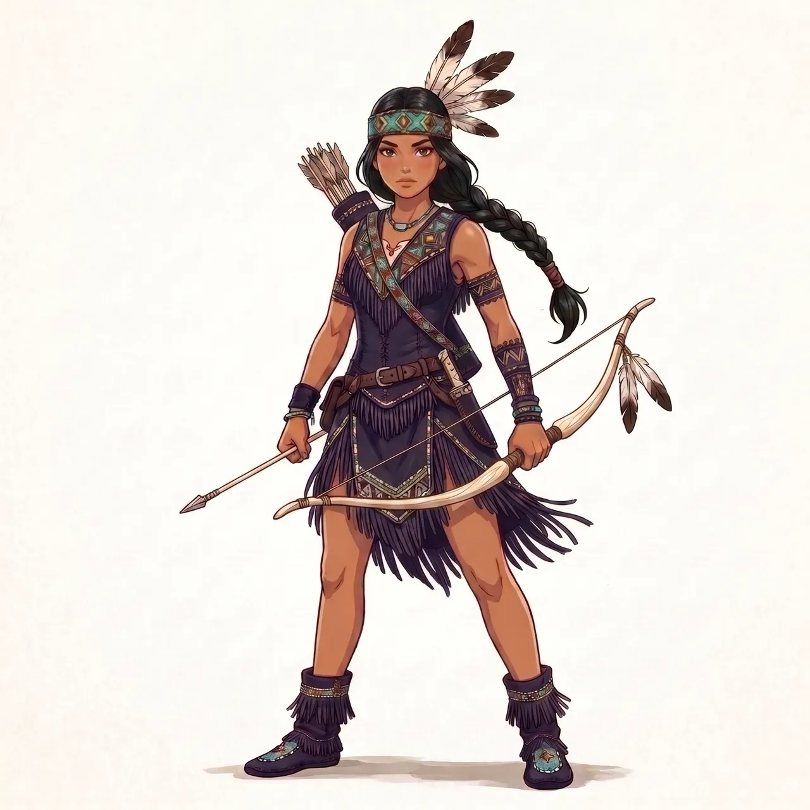
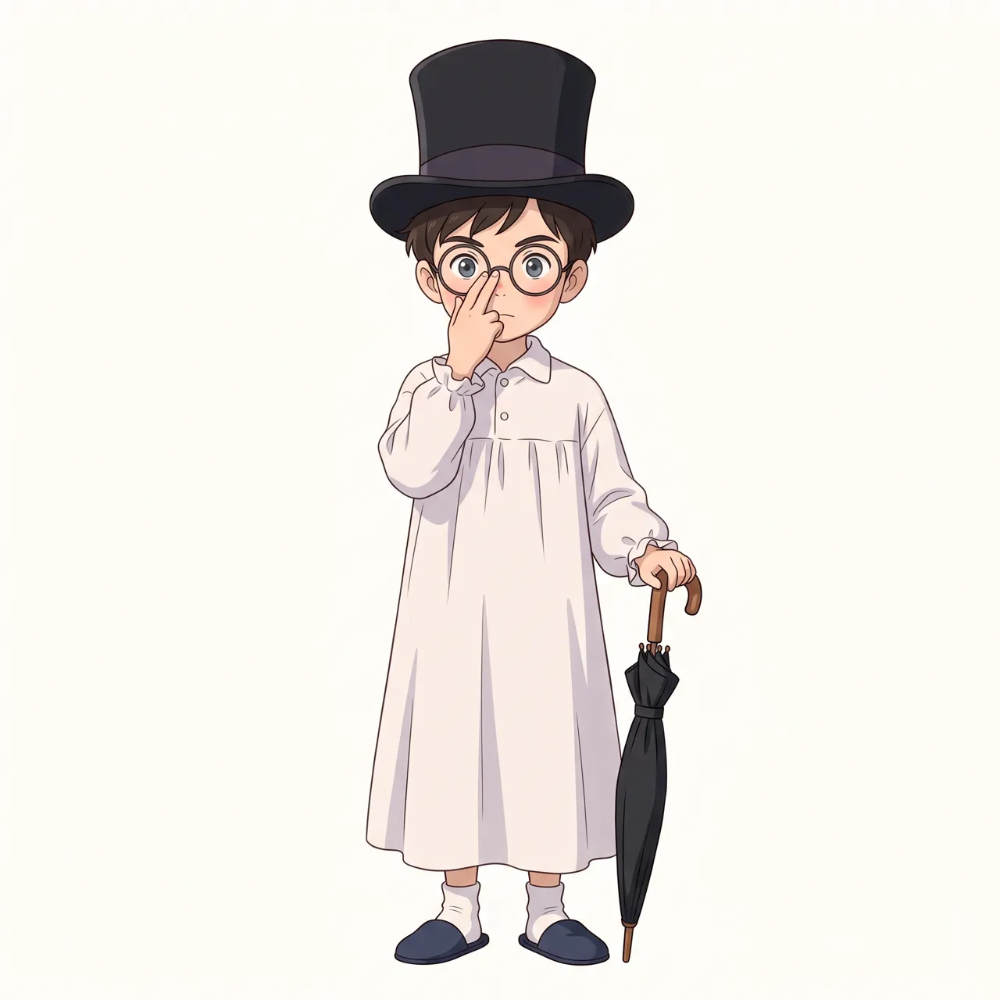
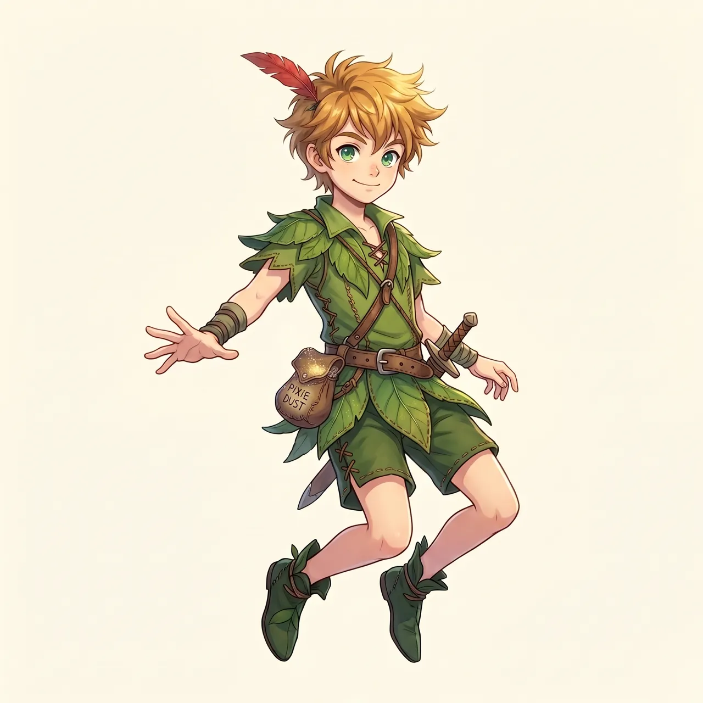
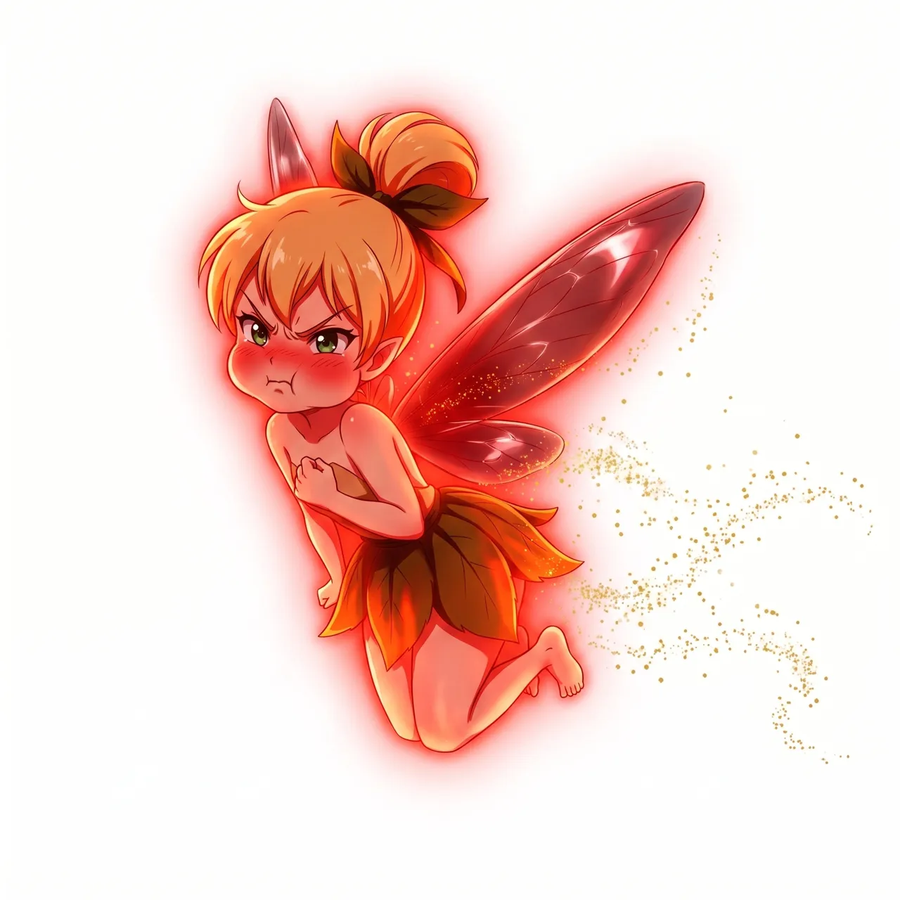

第一部｜低年級
永無島的初次飛翔
星空、仙塵與遺失的玩具
麥克心愛的獨眼泰迪熊被怪風吹進神祕角落！與奇妙仙子、失落男孩組成「尋熊小隊」，跨越精靈山谷與滴答沙灘找回小熊。
同行夥伴：

✦ 國小國語文能力指標題目總匯 ✦
星空、仙塵與遺失的玩具
麥克心愛的獨眼泰迪熊被怪風吹進神祕角落！與奇妙仙子、失落男孩組成「尋熊小隊」，跨越精靈山谷與滴答沙灘找回小熊。

公主、謊言與隱密樹屋
海盜史密在密林四處張貼錯誤告示牌企圖佔領島嶼！跟隨虎蓮公主手上的發光幾何刺青與約翰的雨傘推理，破解文字陷阱、保衛隱密樹屋。


影子、時鐘與不沉之船
虎克船長在「快樂羅傑號」設下黑巫術文字結界，奪走彼得潘的影子！在夕陽沉入海平面前，潛入海盜船看穿航海日誌的矛盾，斬斷黑巫術鎖鏈！


每次出題皆啟動「能力指標保證機制」，確保該年段每個學習表現至少出現 1 題，約 30% 為拖曳互動題：
每部作品皆可從 4 位專屬夥伴中挑選 1 位同行，在全螢幕無捲軸的視覺小說介面中闖關：
3-Ⅰ-1 正確念出並拼讀注音符號3-Ⅰ-2 運用注音符號輔助識字與分辨易混聲韻3-Ⅰ-3 運用注音符號表達想法與語氣4-Ⅰ-5 掌握基本筆畫名稱、筆順規則與字形結構4-Ⅰ-1 認識常用國字、量詞與疊字詞彙4-Ⅰ-2 利用部首與部件輔助識字與歸類4-Ⅰ-3 學習查字典的方法（部首與筆畫檢索）四字語詞 認識日常生活常見基礎四字語詞5-Ⅰ-2 認識常用標點符號（句號、問號、驚嘆號等）5-Ⅰ-3 讀懂課文與短文內容，提取關鍵訊息5-Ⅰ-7 認識基本句型結構與常用連接詞4-Ⅱ-2 利用共同部件推論字音與字義關聯4-Ⅱ-3 熟練部首與音序檢索法查字辭典4-Ⅱ-4 分辨形近字、音近字與多音字詞4-Ⅱ-1 認識常用國字與擴充進階詞彙量4-Ⅱ-5 利用字義推論詞義、近義詞與反義詞辨析四字語詞 理解並運用中年級核心成語與四字語詞5-Ⅱ-2 理解頓號、引號、冒號等標點符號用法5-Ⅱ-4 掌握句型結構、複句連接與句子重組5-Ⅱ-5 認識記敘、說明等不同文本特徵與基礎修辭5-Ⅱ-6 運用歸納策略摘取段落大意5-Ⅱ-8 閱讀短文並進行文意推論與理解4-Ⅲ-1 認識常用國字、精熟多音字與易混淆字4-Ⅲ-2 分析字形結構、六書造字原則與部件4-Ⅲ-3 運用辭典擴充詞彙，辨析詞義褒貶與詞性四字語詞 精熟高年級高階成語典故與語境運用5-Ⅲ-2 理解破折號、刪節號、分號等標點表達效果5-Ⅲ-3 辨析複合修辭（譬喻、轉化、排比、借代、設問）與句型5-Ⅲ-4 區分文本中的「客觀事實」與「主觀觀點」5-Ⅲ-5 認識議論文本特徵（論點、論據、論證）5-Ⅲ-6 運用摘要策略掌握篇章結構與主旨5-Ⅲ-8 結合上下文進行因果推論、言外之意與批判思辨5-Ⅲ-11 廣泛閱讀多元文本題組，進行跨段落整合比較